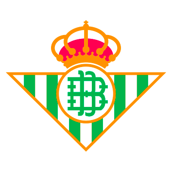
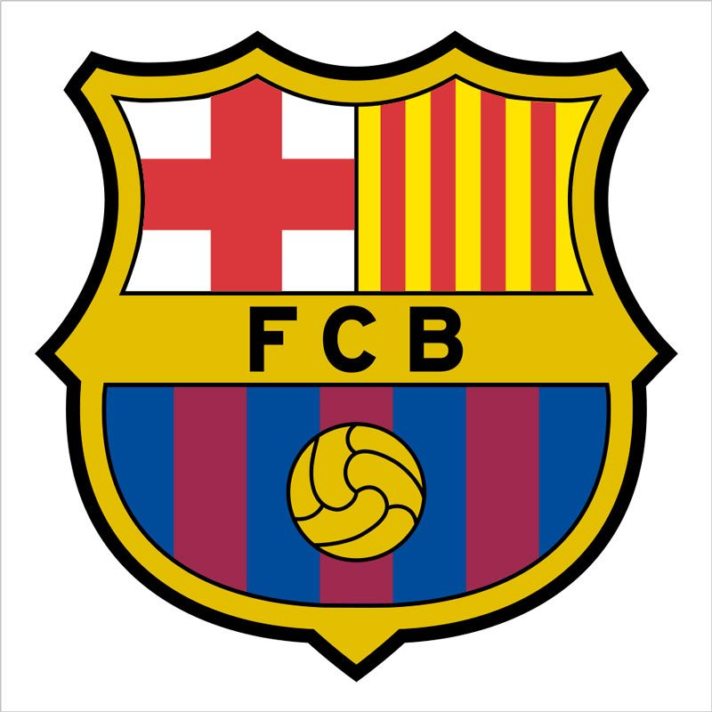
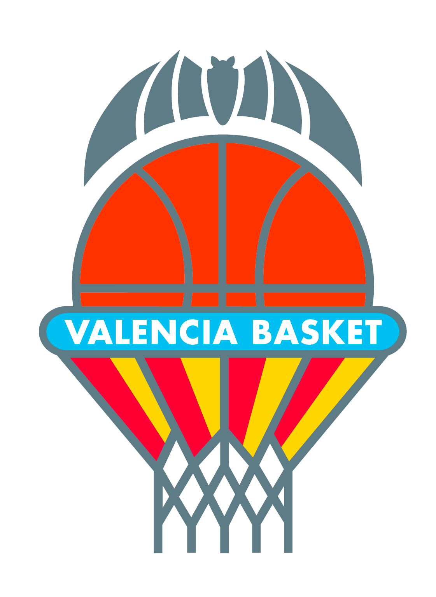
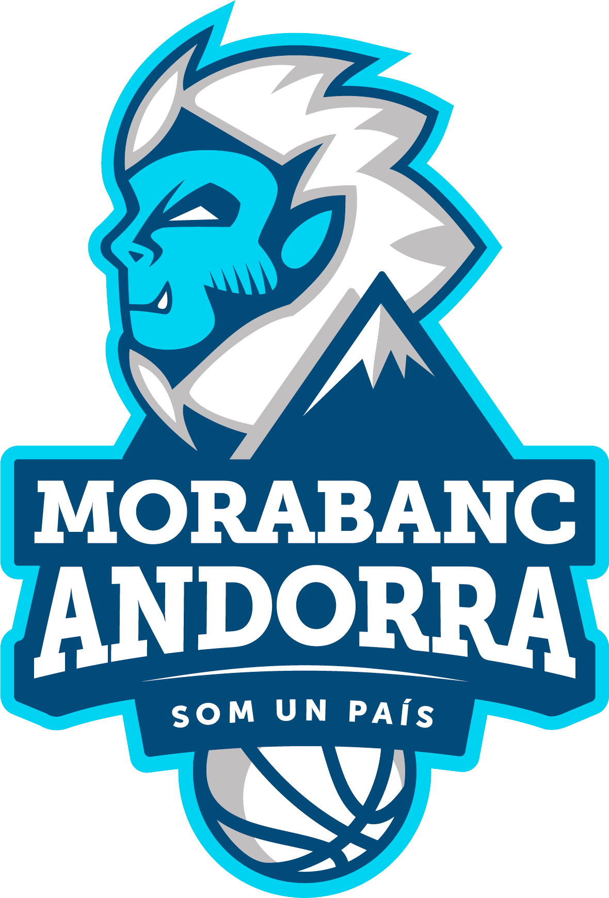
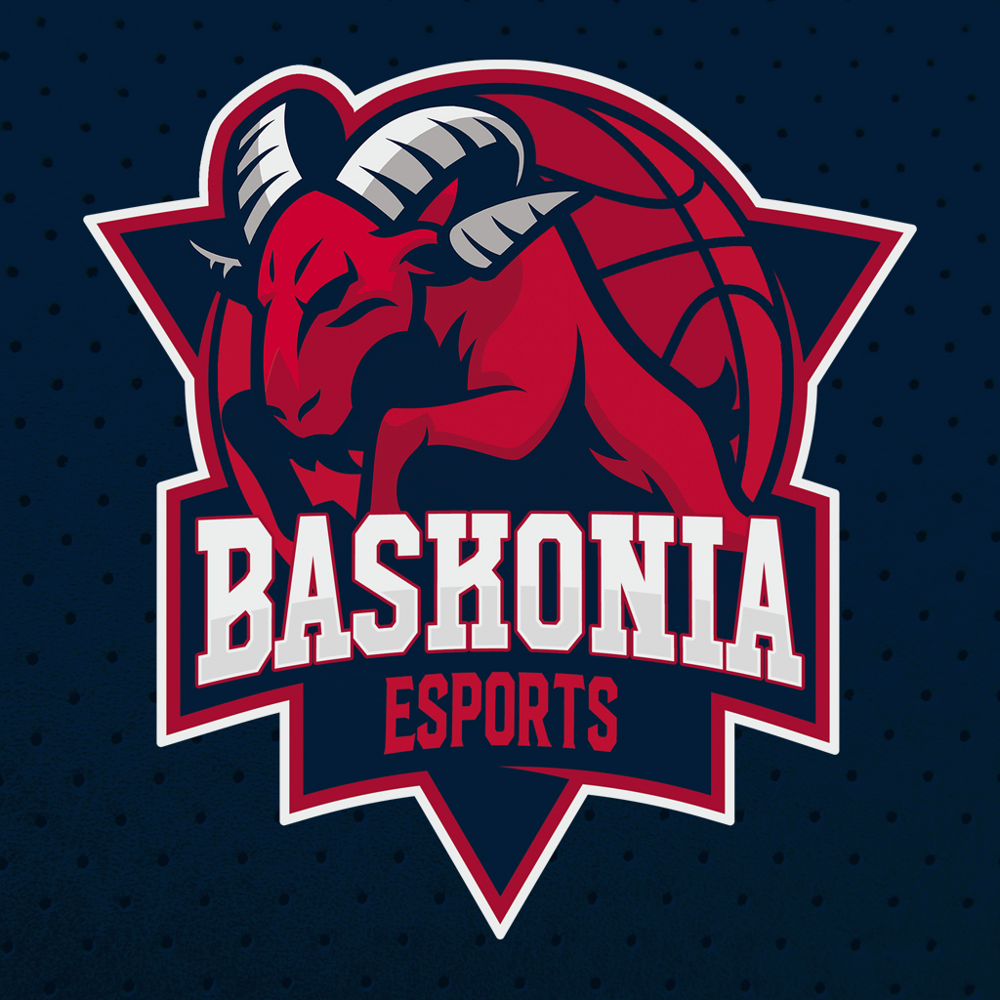

El Real Madrid Baloncesto es la sección de baloncesto del Real Madrid Club de Fútbol. La disciplina fue creada oficialmente en Madrid el 22 de marzo de 1931 de la mano de Ángel Cabrera, si bien sus orígenes datan al año 1929, década en la que se introdujo en Europa un deporte nacido en Estados Unidos en 1891. Contó con una importante sección femenina actualmente extinta.
Participa en la máxima categoría del baloncesto español, la Liga ACB, desde su creación en 1983 cuando sustituyó a la antigua Liga Nacional creada en 1957; siendo uno de los dos únicos equipos que la ha disputado siempre, sin haber descendido de ella, junto al Club Joventut de Badalona. En ella posee los honores de haber sido el primer líder de la historia en la clasificación tras vencer en Madrid al C. B. Estudiantes por 76-61, y los de haber conquistado tanto la primera edición de la Liga Nacional, como la primera edición de la Liga ACB, siendo el que más títulos ha logrado en la historia de la competición. Además de conquistar diez Campeonatos de Liga consecutivos.
En sus más de ochenta años de vida se ha convertido en el club de baloncesto más laureado de España, de Europa y del baloncesto FIBA. A nivel nacional cuenta con treinta y cinco títulos de Liga (récord), veintiocho de Copa (récord), ocho Supercopas (récord), mientras que a nivel continental ostenta diez Copas de Europa/Euroligas (récord de la máxima competición europea), cuatro Recopas de Europa (récord compartido), una Copa Korać, una Copa ULEB y una Copa Latina (récord), completándose a nivel mundial con cinco títulos intercontinentales de clubes FIBA (4 Copas Intercontinentales y 1 Copa Mundial de Clubes -récord-). Además, es el más laureado del Torneo Internacional ACB (oficial, no reconocido en competiciones FIBA) y del Torneo Internacional de Navidad FIBA (oficial en sus inicios) siendo también el más laureado en las distintas competiciones disputadas a nivel regional (39 títulos en total).
|  |
 |
 |
|  |
 |